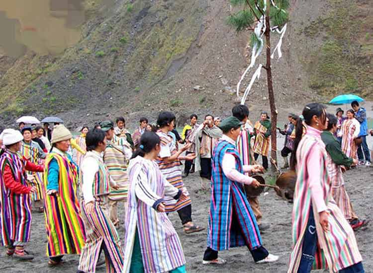
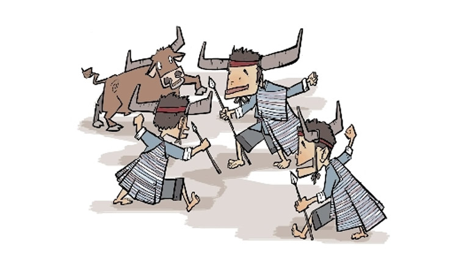
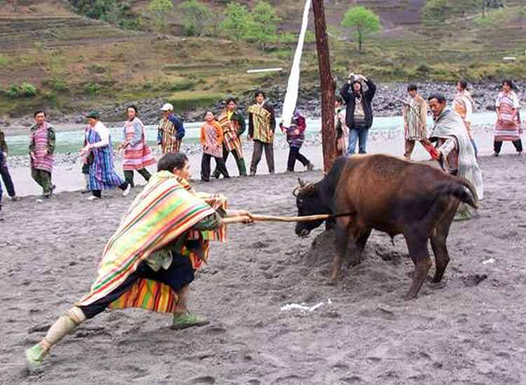

在我国的云南省怒江傈僳族自治州贡山独龙族怒族自治县西部独龙江流域（让我喘口气！），有一个神秘的、名字很霸气的民族——独龙族，这个族名听起来盛产英雄好汉有没有。在过去，独龙族的新年没有固定的日子，一般由各村寨长老在一年最后一月择一个吉日，一般在每年农历腊月底或次年的正月初举行，节期最短3天，最长9天。
1991年，公历1月10日被定为独龙族的卡秋哇节。各村寨卡秋哇节的节期前后相续，居住于独龙江上游的村落最先揭开序幕，由上游经中游而至下游，各村寨依序进入节期，整个独龙江流域独龙族山寨的卡秋哇庆典前后持续一个月。独龙族人民在节日开始的时候，在特制的木条上刻上缺口，这就是“请柬”，派人送往邀请的村寨。木条上刻了几个缺口，就表示再过几天后就要举行年节。
接到木刻“请柬”的人，要带上各种食物，前往致意祝贺。宾主相见，要共同饮一筒水酒，相互对歌。晚上，全村人都陪着客人欢聚一处，围着篝火，一面品尝食物，一面看青年男女跳“锅庄舞”，共同庆贺一年一度的丰收。男子一边祝词，一边喝酒，喝完酒就把酒碗抛入悬挂在火塘上空的竹架上以卜祸福，碗口朝上为吉兆。
年节第二天，有的村寨还举行射猎庆典。先是用熟面捏出各种动物，然后由祭师祈祷，祭师祭毕就把各种动物模型抛向人群，由射手任意射猎。这时芒锣齐鸣，人们围成圈边歌边舞，热闹非凡。他们认为，射中什么今年就会猎获什么。
独龙族长期以采集狩猎为生，这是新中国成立前的生活遗俗。现在，独龙族已经开始重视保护野生动物，不再以狩猎为生，射猎比赛成为对祖先的一种追念形式。独龙族年节最隆重的活动是“剽牛祭天”,祭天的牛或是一家人献祭，或是大家凑起来集体献出。主持年祭的家族长或祭师先把牛拴在场子中央的木桩上，牛角上挂满晶莹的珠子，牛背上盖上灿若云霞的独龙毯。等祭品一一摆好后，祭师点燃松明和青松毛，面向东方祭祀山神。
仪式结束，摘下牛身上的珠珠和独龙毯，两个猎手手持竹矛从两边跳舞进场，围着的人这时一个个轮着给他俩敬酒。他俩猛喝猛跳，手舞足蹈；此时，大小芒锣齐鸣，四周的人围成一圈跳起剽牛舞，情绪越来越高。两位猎手跳到牛的两头，将手中竹矛猛刺入牛的腋下，人们则手牵手地向牛挥刀舞弓大吼大叫。直到牛倒下，人群发出胜利的欢笑。大家迅速将牛分割成许多片，当场煮熟，凡是到场的人不分男女老少都分到一份。大家边吃边跳舞，共祝来年获得更好的收成。
1、每年1月10日是云南省独龙江流域的独龙族的新年——卡秋哇节；
2、独龙族的人们像族名一样热情豪爽，快意人生。